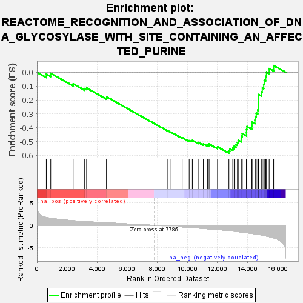
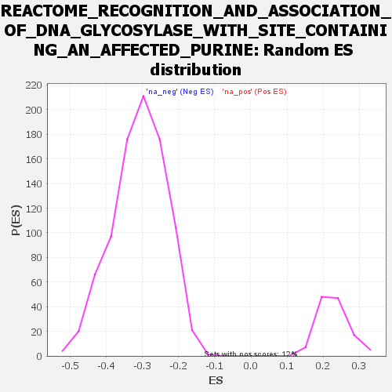

| | | Dataset | all_genes |
| Phenotype | NoPhenotypeAvailable |
| Upregulated in class | na_neg |
| GeneSet | REACTOME_RECOGNITION_AND_ASSOCIATION_OF_DNA_GLYCOSYLASE_WITH_SITE_CONTAINING_AN_AFFECTED_PURINE |
| Enrichment Score (ES) | -0.5842477 |
| Normalized Enrichment Score (NES) | -1.8945462 |
| Nominal p-value | 0.0 |
| FDR q-value | 0.003032304 |
| FWER p-Value | 0.099 |
Table: GSEA Results Summary

Fig 1: Enrichment plot: REACTOME_RECOGNITION_AND_ASSOCIATION_OF_DNA_GLYCOSYLASE_WITH_SITE_CONTAINING_AN_AFFECTED_PURINE
Profile of the Running ES Score & Positions of GeneSet Members on the Rank Ordered List
| SYMBOL | RANK IN GENE LIST | RANK METRIC SCORE | RUNNING ES | CORE ENRICHMENT | | 1 | TERF1 | 622 | 1.765 | -0.0126 | No |
| 2 | POT1 | 915 | 1.589 | -0.0076 | No |
| 3 | TERF2 | 2404 | 1.031 | -0.0832 | No |
| 4 | H2AZ2 | 3171 | 0.852 | -0.1175 | No |
| 5 | TINF2 | 3300 | 0.821 | -0.1135 | No |
| 6 | NEIL3 | 4621 | 0.567 | -0.1855 | No |
| 7 | TERF2IP | 4641 | 0.565 | -0.1786 | No |
| 8 | OGG1 | 8660 | -0.159 | -0.4201 | No |
| 9 | H2AC18 | 8912 | -0.208 | -0.4324 | No |
| 10 | H4C11 | 9651 | -0.364 | -0.4719 | No |
| 11 | H4C8 | 10118 | -0.469 | -0.4935 | No |
| 12 | H4C14 | 10252 | -0.501 | -0.4945 | No |
| 13 | H2BC9 | 10328 | -0.517 | -0.4916 | No |
| 14 | H2AX | 10714 | -0.609 | -0.5063 | No |
| 15 | H4C1 | 11059 | -0.692 | -0.5173 | No |
| 16 | H2BC21 | 11333 | -0.770 | -0.5229 | No |
| 17 | H4C13 | 11441 | -0.796 | -0.5180 | No |
| 18 | ACD | 12000 | -0.941 | -0.5384 | No |
| 19 | MUTYH | 12756 | -1.189 | -0.5673 | Yes |
| 20 | H2BC12 | 12827 | -1.214 | -0.5542 | Yes |
| 21 | H4C12 | 13014 | -1.279 | -0.5473 | Yes |
| 22 | H2BC17 | 13107 | -1.313 | -0.5341 | Yes |
| 23 | H2BC14 | 13229 | -1.363 | -0.5220 | Yes |
| 24 | H2BC3 | 13325 | -1.395 | -0.5079 | Yes |
| 25 | H4C2 | 13377 | -1.412 | -0.4909 | Yes |
| 26 | H2BC13 | 13571 | -1.489 | -0.4813 | Yes |
| 27 | H2BC11 | 13574 | -1.491 | -0.4602 | Yes |
| 28 | H2AJ | 13647 | -1.525 | -0.4428 | Yes |
| 29 | H2BC10 | 13921 | -1.634 | -0.4360 | Yes |
| 30 | H2BC5 | 13928 | -1.637 | -0.4131 | Yes |
| 31 | H4C5 | 13957 | -1.648 | -0.3913 | Yes |
| 32 | H4C9 | 14285 | -1.801 | -0.3854 | Yes |
| 33 | H2BC7 | 14296 | -1.805 | -0.3603 | Yes |
| 34 | H2BC26 | 14486 | -1.895 | -0.3447 | Yes |
| 35 | H2BC4 | 14509 | -1.907 | -0.3189 | Yes |
| 36 | H2AC8 | 14573 | -1.939 | -0.2950 | Yes |
| 37 | H2AC7 | 14673 | -1.992 | -0.2726 | Yes |
| 38 | H2AC14 | 14713 | -2.016 | -0.2462 | Yes |
| 39 | H4C16 | 14727 | -2.025 | -0.2181 | Yes |
| 40 | H2AC4 | 14730 | -2.025 | -0.1894 | Yes |
| 41 | H4C4 | 14732 | -2.027 | -0.1605 | Yes |
| 42 | H4C3 | 14934 | -2.159 | -0.1419 | Yes |
| 43 | H2BC6 | 14976 | -2.181 | -0.1133 | Yes |
| 44 | H2AC19 | 15071 | -2.247 | -0.0870 | Yes |
| 45 | H2BC15 | 15107 | -2.270 | -0.0567 | Yes |
| 46 | MPG | 15203 | -2.344 | -0.0291 | Yes |
| 47 | H2AC20 | 15254 | -2.386 | 0.0019 | Yes |
| 48 | H2BC8 | 15434 | -2.515 | 0.0269 | Yes |
| 49 | H2AC6 | 15731 | -2.781 | 0.0487 | Yes |
Table: GSEA details [plain text format]

Fig 2: REACTOME_RECOGNITION_AND_ASSOCIATION_OF_DNA_GLYCOSYLASE_WITH_SITE_CONTAINING_AN_AFFECTED_PURINE: Random ES distribution
Gene set null distribution of ES for REACTOME_RECOGNITION_AND_ASSOCIATION_OF_DNA_GLYCOSYLASE_WITH_SITE_CONTAINING_AN_AFFECTED_PURINE